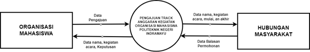

Kemahasiswaan Politeknik Negeri indramayu mempunyai sebuah program yaitu Pengajuan izin dan pelaporan kegiatan organisasi mahasiswa, dimana para organisasi mahasiswa dapat mengajuka izin kepada kampus unutk melakukan kegiatan kegiatan organisasi seperti membuat acara perlombaan yang di buat oleh pihak ormawa ataupun seminar. Program atau aplikasi pengajuan ini sangat membantu para mahasiswa ataupun pihak kampus, di dalam program ini terdapat beberapa menu pilhan yaitu Dashboard, izin Kegiatan, Laporan Kegiatan, profil akun, dan pilihan ganti pasword, Pilihan tersebut memiliki fungsinya masing masing dan pada program ini memliki dua tampilan yaitu tampilan untuk admin dan tampilan unutk user.
Program ini juga akan mecatat data – data yang pengguna masukan kedalam sebuah database yang kami buat dan masuk kedalam beberapa tabel yang ada di database sesuai nama atau kebutuhan yang di masukan, sebagai contoh jika kita mengisi form pengajuan makan semua yang dia masuakn di form pengajuan akan masuk kedalam tabel pengajuan yang ada di dalam database.
Pengajuan track anggaran kegiatan mahasiswa adalah proses di mana mahasiswa atau kelompok mahasiswa mengusulkan ide atau rencana kegiatan yang ingin mereka laksanakan di lingkungan kampus atau di luar kampus sebagai bagian dari kegiatan kemahasiswaan, untuk menggunakan aplikasi ini oramwa harus menyusun proposal yang berisi detail tentang kegiatan yang ingin dilakukan. Proposal ini mencakup tujuan kegiatan, rincian kegiatan, jadwal pelaksanaan, anggaran yang dibutuhkan, serta manfaat yang diharapkan dari kegiatan tersebut dan Proposal yang telah disusun kemudian diajukan kepada pihak yang berwenang di kemahasiswaan, seperti unit kemahasiswaan, panitia kegiatan, atau lembaga mahasiswa yang terkait. Biasanya ada prosedur khusus untuk mengajukan proposal, seperti formulir pengajuan yang harus diisi.

Pada gambar diatas menunjukan diagram konteks yang ada pada program kami unutk menuntun alur jalanya programa ini, dimulai dari pihak organisasi mahasiswa yang memberikan pengajuan memlalui form yang berisi datat nama ormawa, nama kegiatan, dimulainya acara, berakhirnya acara, dokumen rab, dan dokumen undangan. Setelah masuk pihak hubungan mayrakat akan memrikan balasan kepada pihak ormawa.
Di atas merupaka antar muka atau interface dari admin yang dimana pada gambar pertama merrupakan tampilan Login, pada laman inilah seorang admin akan memasukan akunnya untuk mengelola yang ada di dalam program admin ini. Pada gambar kedua merupakan tampilan dashboard seorang admin dapat melihat jumlah dan angka orang yang mengajukan permintaan. Pada gambar ketiga adalah laman unutk membalas permintaan ormawa. Dan yang terakhir adalah laman biodata dari seorang admin.